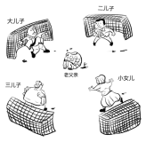

2005 年全国硕士研究生招生考试英语试题
Section I Use of English
Directions:
Read the following text. Choose the best word(s) for each numbered blank and mark A, B, C or D on the ANSWER SHEET 1. (10 points)
The human nose is an underrated tool. Humans are often thought to be insensitive smellers compared with animals, 1 this is largely because, 2 animals, we stand upright. This means that our noses are 3 to perceiving those smells which float through the air, 4 the majority of smells which stick to surfaces. In fact, 5 , we are extremely sensitive to smells, 6 we do not generally realize it. Our noses are capable of 7 human smells even when these are 8 to far below one part in one million.
Strangely, some people find that they can smell one type of flower but not another, 9 others are sensitive to the smells of both flowers. This may be because some people do not have the genes necessary to generate 10 smell receptors in the nose. These receptors are the cells which sense smells and send 11 to the brain. However, it has been found that even people insensitive to a certain smell 12 can suddenly become sensitive to it when 13 to it often enough.
The explanation for insensitivity to smell seems to be that the brain finds it 14 to keep all smell receptors working all the time but can 15 new receptors if necessary. This may 16 explain why we are not usually sensitive to our own smells — we simply do not need to be. We are not 17 of the usual smell of our own house, but we 18 new smells when we visit someone else’s. The brain finds it best to keep smell receptors 19 for unfamiliar and emergency signals 20 the smell of smoke, which might indicate the danger of fire.
Section II Reading Comprehension
Part A
Directions:
Read the following four texts. Answer the questions below each text by choosing A, B, C or D. Mark your answers on ANSWER SHEET 1. (40 points)
Text 1
Everybody loves a fat pay rise. Yet pleasure at your own can vanish if you learn that a colleague has been given a bigger one. Indeed, if he has a reputation for slacking, you might even be outraged. Such behaviour is regarded as “all too human,” with the underlying assumption that other animals would not be capable of this finely developed sense of grievance. But a study by Sarah Brosnan and Frans de Waal of Emory University in Atlanta, Georgia, which has just been published in Nature, suggests that it is all too monkey, as well.
The researchers studied the behaviour of female brown capuchin monkeys. They look cute. They are good-natured, co-operative creatures, and they share their food readily. Above all, like their female human counterparts, they tend to pay much closer attention to the value of “goods and services” than males.
Such characteristics make them perfect candidates for Dr. Brosnan’s and Dr. de Waal’s study. The researchers spent two years teaching their monkeys to exchange tokens for food. Normally, the monkeys were happy enough to exchange pieces of rock for slices of cucumber. However, when two monkeys were placed in separate but adjoining chambers, so that each could observe what the other was getting in return for its rock, their behaviour became markedly different.
In the world of capuchins grapes are luxury goods (and much preferable to cucumbers). So when one monkey was handed a grape in exchange for her token, the second was reluctant to hand hers over for a mere piece of cucumber. And if one received a grape without having to provide her token in exchange at all, the other either tossed her own token at the researcher or out of the chamber, or refused to accept the slice of cucumber. Indeed, the mere presence of a grape in the other chamber (without an actual monkey to eat it) was enough to induce resentment in a female capuchin.
The researchers suggest that capuchin monkeys, like humans, are guided by social emotions. In the wild, they are a co-operative, group-living species. Such co-operation is likely to be stable only when each animal feels it is not being cheated. Feelings of righteous indignation, it seems, are not the preserve of people alone. Refusing a lesser reward completely makes these feelings abundantly clear to other members of the group. However, whether such a sense of fairness evolved independently in capuchins and humans, or whether it stems from the common ancestor that the species had 35 million years ago, is, as yet, an unanswered question.
21. In the opening paragraph, the author introduces his topic by ______
22. The statement “it is all too monkey” (Paragraph 1) implies that ______
23. Female capuchin monkeys were chosen for the research most probably because they are
______
24. Dr. Brosnan and Dr. de Waal have eventually found in their study that the monkeys
______
25. What can we infer from the last paragraph?
Text 2
Do you remember all those years when scientists argued that smoking would kill us but the doubters insisted that we didn’t know for sure? That the evidence was inconclusive, the science uncertain? That the antismoking lobby was out to destroy our way of life and the government should stay out of the way? Lots of Americans bought that nonsense, and over three decades, some 10 million smokers went to early graves.
There are upsetting parallels today, as scientists in one wave after another try to awaken us to the growing threat of global warming. The latest was a panel from the National Academy of Sciences, enlisted by the White House, to tell us that the Earth’s atmosphere is definitely warming and that the problem is largely man-made. The clear message is that we should get moving to protect ourselves. The president of the National Academy, Bruce Alberts, added this key point in the preface to the panel’s report: “Science never has all the answers. But science does provide us with the best available guide to the future, and it is critical that our nation and the world base important policies on the best judgments that science can provide concerning the future consequences of present actions.”
Just as on smoking, voices now come from many quarters insisting that the science about global warming is incomplete, that it’s OK to keep pouring fumes into the air until we know for sure. This is a dangerous game: by the time 100 percent of the evidence is in, it may be too late. With the risks obvious and growing, a prudent people would take out an insurance policy now.
Fortunately, the White House is starting to pay attention. But it’s obvious that a majority of the president’s advisers still don’t take global warming seriously. Instead of a plan of action, they continue to press for more research — a classic case of “paralysis by analysis.”
To serve as responsible stewards of the planet, we must press forward on deeper atmospheric and oceanic research. But research alone is inadequate. If the Administration won’t take the legislative initiative, Congress should help to begin fashioning conservation measures. A bill by Democratic Senator Robert Byrd of West Virginia, which would offer financial incentives for private industry, is a promising start. Many see that the country is getting ready to build lots of new power plants to meet our energy needs. If we are ever going to protect the atmosphere, it is crucial that those new plants be environmentally sound.
26. An argument made by supporters of smoking was that ______
27. According to Bruce Alberts, science can serve as ______
28. What does the author mean by “paralysis by analysis” (Paragraph 4)?
29. According to the author, what should the Administration do about global warming?
30. The author associates the issue of global warming with that of smoking because ______
Text 3
Of all the components of a good night’s sleep, dreams seem to be least within our control. In dreams, a window opens into a world where logic is suspended and dead people speak. A century ago, Freud formulated his revolutionary theory that dreams were the disguised shadows of our unconscious desires and fears; by the late 1970s, neurologists had switched to thinking of them as just “mental noise” — the random byproducts of the neural-repair work that goes on during sleep. Now researchers suspect that dreams are part of the mind’s emotional thermostat, regulating moods while the brain is “off-line.” And one leading authority says that these intensely powerful mental events can be not only harnessed but actually brought under conscious control, to help us sleep and feel better. “It’s your dream,” says Rosalind Cartwright, chair of psychology at Chicago’s Medical Center. “If you don’t like it, change it.”
Evidence from brain imaging supports this view. The brain is as active during REM (rapid eye movement) sleep — when most vivid dreams occur — as it is when fully awake, says Dr. Eric Nofzinger at the University of Pittsburgh. But not all parts of the brain are equally involved; the limbic system (the “emotional brain”) is especially active, while the prefrontal cortex (the center of intellect and reasoning) is relatively quiet. “We wake up from dreams happy or depressed, and those feelings can stay with us all day,” says Stanford sleep researcher Dr. William Dement.
The link between dreams and emotions shows up among the patients in Cartwright’s clinic. Most people seem to have more bad dreams early in the night, progressing toward happier ones before awakening, suggesting that they are working through negative feelings generated during the day. Because our conscious mind is occupied with daily life we don’t always think about the emotional significance of the day’s events — until, it appears, we begin to dream.
And this process need not be left to the unconscious. Cartwright believes one can exercise conscious control over recurring bad dreams. As soon as you awaken, identify what is upsetting about the dream. Visualize how you would like it to end instead; the next time it occurs, try to wake up just enough to control its course. With much practice people can learn to, literally, do it in their sleep.
At the end of the day, there’s probably little reason to pay attention to our dreams at all unless they keep us from sleeping or “we wake up in a panic,” Cartwright says. Terrorism, economic uncertainties and general feelings of insecurity have increased people’s anxiety.
Those suffering from persistent nightmares should seek help from a therapist. For the rest of us, the brain has its ways of working through bad feelings. Sleep — or rather dream — on it and you’ll feel better in the morning.
31. Researchers have come to believe that dreams ______
32. By referring to the limbic system, the author intends to show ______
33. The negative feelings generated during the day tend to ______
34. Cartwright seems to suggest that ______
35. What advice might Cartwright give to those who sometimes have bad dreams?
Text 4
Americans no longer expect public figures, whether in speech or in writing, to command the English language with skill and gift. Nor do they aspire to such command themselves. In his latest book, Doing Our Own Thing: The Degradation of Language and Music and Why We Should, Like, Care, John McWhorter, a linguist and controversialist of mixed liberal and conservative views, sees the triumph of 1960s counter-culture as responsible for the decline of formal English.
Blaming the permissive 1960s is nothing new, but this is not yet another criticism against the decline in education. Mr. McWhorter’s academic speciality is language history and change, and he sees the gradual disappearance of “whom,” for example, to be natural and no more regrettable than the loss of the case-endings of Old English.
But the cult of the authentic and the personal, “doing our own thing”, has spelt the death of formal speech, writing, poetry and music. While even the modestly educated sought an elevated tone when they put pen to paper before the 1960s, even the most well regarded writing since then has sought to capture spoken English on the page. Equally, in poetry, the highly personal, performative genre is the only form that could claim real liveliness. In both oral and written English, talking is triumphing over speaking, spontaneity over craft.
Illustrated with an entertaining array of examples from both high and low culture, the trend that Mr. McWhorter documents is unmistakable. But it is less clear, to take the question of his subtitle, why we should, like, care. As a linguist, he acknowledges that all varieties of human language, including non-standard ones like Black English, can be powerfully expressive — there exists no language or dialect in the world that cannot convey complex ideas. He is not arguing, as many do, that we can no longer think straight because we do not talk proper.
Russians have a deep love for their own language and carry large chunks of memorized poetry in their heads, while Italian politicians tend to elaborate speech that would seem old-fashioned to most English-speakers. Mr. McWhorter acknowledges that formal language is not strictly necessary, and proposes no radical education reforms — he is really grieving over the loss of something beautiful more than useful. We now take our English “on paper plates instead of china”. A shame, perhaps, but probably an inevitable one.
36. According to McWhorter, the decline of formal English ______
37. The word “talking” (Paragraph 3) denotes ______
38. To which of the following statements would McWhorter most likely agree?
39. The description of Russians’ love of memorizing poetry shows the author’s ______
40. According to the last paragraph, “paper plates” is to “china” as ______
Part B
Directions:
In the following text, some sentences have been removed. For Questions 41-45, choose the most suitable one from the list A-G to fit into each of the numbered blanks. There are two extra choices, which do not fit in any of the gaps. Mark your answers on ANSWER SHEET
1. (10 points)
Canada’s premiers (the leaders of provincial governments), if they have any breath left after complaining about Ottawa at their late July annual meeting, might spare a moment to do something, together, to reduce health-care costs.
They’re all groaning about soaring health budgets, the fastest-growing component of which are pharmaceutical costs.
(41)____________________________________
What to do? Both the Romanow commission and the Kirby committee on health care — to say nothing of reports from other experts — recommended the creation of a national drug agency. Instead of each province having its own list of approved drugs, bureaucracy, procedures and limited bargaining power, all would pool resources, work with Ottawa, and create a national institution.
(42)____________________________________
But “national” doesn’t have to mean that. “National” could mean interprovincial — provinces combining efforts to create one body.
Either way, one benefit of “a national” organization would be to negotiate better prices, if possible, with drug manufacturers. Instead of having one province — or a series of hospitals within a province — negotiate a price for a given drug on the provincial list, the national agency would negotiate on behalf of all provinces.
Rather than, say, Quebec, negotiating on behalf of seven million people, the national agency would negotiate on behalf of 31 million people. Basic economics suggests the greater the potential consumers, the higher the likelihood of a better price.
(43)____________________________________
A small step has been taken in the direction of a national agency with the creation of the Canadian Coordinating Office for Health Technology Assessment, funded by Ottawa and the provinces. Under it, a Common Drug Review recommends to provincial lists which new drugs should be included. Predictably, and regrettably, Quebec refused to join.
A few premiers are suspicious of any federal-provincial deal-making. They (particularly Quebec and Alberta) just want Ottawa to fork over additional billions with few, if any, strings attached. That’s one reason why the idea of a national list hasn’t gone anywhere while drug costs keep rising fast.
(44)____________________________________
Premiers love to quote Mr. Romanow’s report selectively, especially the parts about more federal money. Perhaps they should read what he had to say about drugs: “A national drug agency would provide governments more influence on pharmaceutical companies in order to try to constrain the ever-increasing cost of drugs.” (45)____________________________________ So when the premiers gather in Niagara Falls to assemble their usual complaint list, they should also get cracking about something in their jurisdiction that would help their budgets and patients.
A) Quebec’s resistance to a national agency is provincialist ideology. One of the first advocates for a national list was a researcher at Laval University. Quebec’s Drug Insurance Fund has seen its costs skyrocket with annual increases from 14.3 percent to
26.8 percent!
B) Or they could read Mr. Kirby’s report: “The substantial buying power of such an agency would strengthen the public prescription-drug insurance plans to negotiate the lowest possible purchase prices from drug companies.”
C) What does “national” mean? Roy Romanow and Senator Michael Kirby recommended a federal-provincial body much like the recently created National Health Council.
D) The problem is simple and stark: health-care costs have been, are, and will continue to increase faster than government revenues.
E) According to the Canadian Institute for Health Information, prescription drug costs have risen since 1997 at twice the rate of overall health-care spending. Part of the increase comes from drugs being used to replace other kinds of treatments. Part of it arises from new drugs costing more than older kinds. Part of it is higher prices.
F) So, if the provinces want to run the health-care show, they should prove they can run it, starting with an interprovincial health list that would end duplication, save administrative costs, prevent one province from being played off against another, and bargain for better drug prices.
G) Of course, the pharmaceutical companies will scream. They like divided buyers; they can lobby better that way. They can use the threat of removing jobs from one province to another. They can hope that, if one province includes a drug on its list, the pressure will cause others to include it on theirs. They wouldn’t like a national agency, but self-interest would lead them to deal with it.
Part C
Directions:
Read the following text carefully and then translate the underlined segments into Chinese. Your translation should be written clearly on ANSWER SHEET 2. (10 points)
It is not easy to talk about the role of the mass media in this overwhelmingly significant phase in European history. History and news become confused, and one’s impressions tend to be a mixture of skepticism and optimism. (46) Television is one of the means by which these feelings are created and conveyed — and perhaps never before has it served so much to connect different peoples and nations as in the recent events in Europe. The Europe that is now forming cannot be anything other than its peoples, their cultures and national identities. With this in mind we can begin to analyze the European television scene. (47) In Europe, as elsewhere, multi-media groups have been increasingly successful; groups which bring together television, radio, newspapers, magazines and publishing houses that work in relation to one another. One Italian example would be the Berlusconi group, while abroad Maxwell and Murdoch come to mind.
Clearly, only the biggest and most flexible television companies are going to be able to compete in such a rich and hotly-contested market. (48) This alone demonstrates that the television business is not an easy world to survive in, a fact underlined by statistics that show that out of eighty European television networks, no less than 50% took a loss in 1989.
Moreover, the integration of the European community will oblige television companies to cooperate more closely in terms of both production and distribution.
(49) Creating a “European identity” that respects the different cultures and traditions which go to make up the connecting fabric of the Old Continent is no easy task and demands a strategic choice — that of producing programs in Europe for Europe. This entails reducing our dependence on the North American market, whose programs relate to experiences and cultural traditions which are different from our own.
In order to achieve these objectives, we must concentrate more on co-productions, the exchange of news, documentary services and training. This also involves the agreements between European countries for the creation of a European bank for Television Production which, on the model of the European Investments Bank, will handle the finances necessary for production costs. (50) In dealing with a challenge on such a scale, it is no exaggeration to say, “United we stand, divided we fall” — and if I had to choose a slogan it would be
“Unity in our diversity.” A unity of objectives that nonetheless respect the varied peculiarities of each country.
Section III Writing
Part A
51. Directions:
Two months ago you got a job as an editor for the magazine Designs & Fashions. But now you find that the work is not what you expected. You decide to quit. Write a letter to your boss, Mr. Wang, telling him your decision, stating your reason (s), and making an apology.
Write your letter with no less than 100 words. Write it neatly on ANSWER SHEET 2. Do not sign your own name at the end of the letter; use “Li Ming” instead. You do not need to write the address. (10 points)
Part B
52. Directions:
Write an essay of 160-200 words based on the following drawing. In your essay, you should first describe the drawing, then interpret its meaning, and give your comment on it.
You should write neatly on ANSWER SHEET 2. (20 points)
